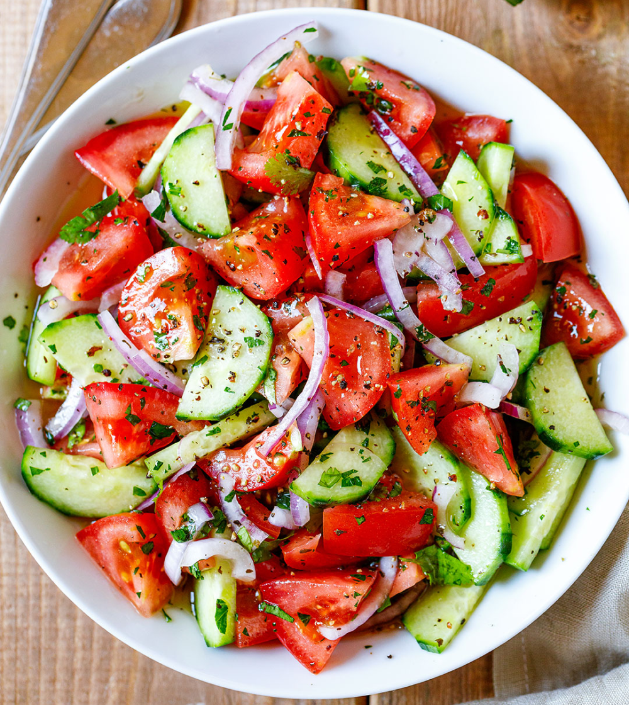
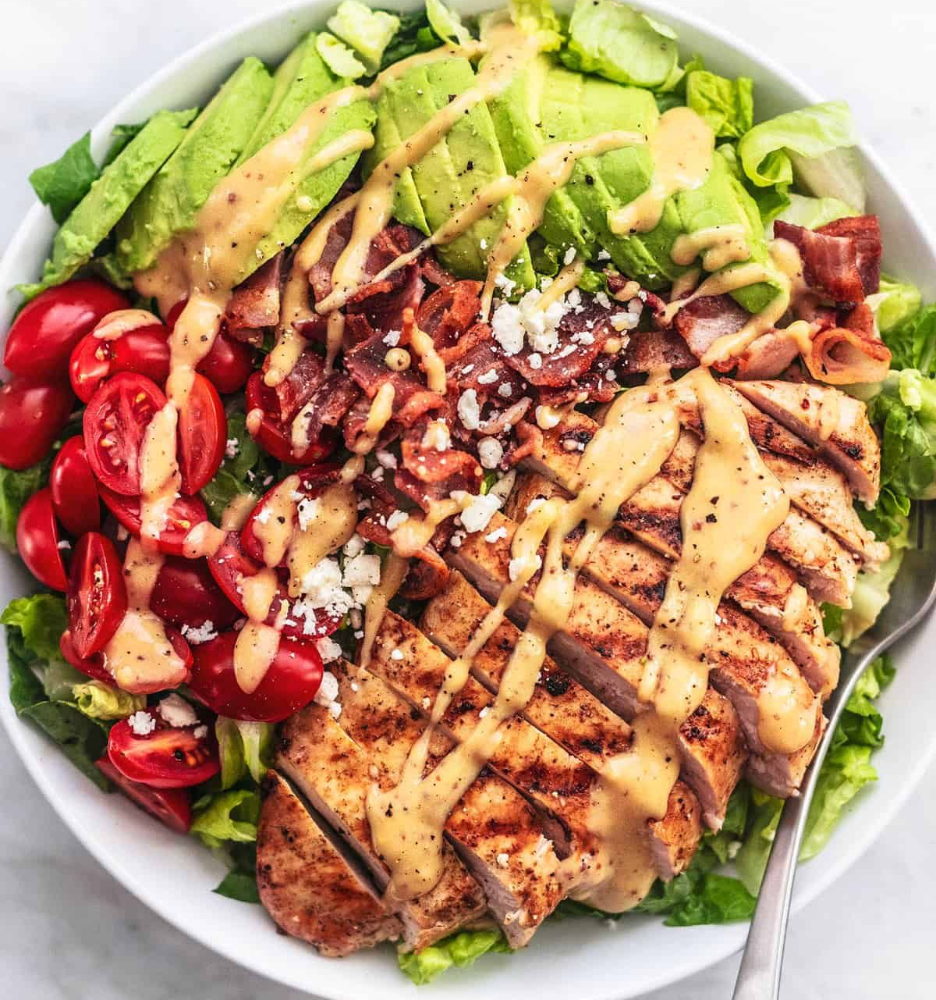

- 10 Minutes
- 6 Ingredients
- 4-5 Servings
Cocumber Tomato Salad
Cucumber Tomato Salad is a classic salad, light, cooling, and oh-so refreshing. This easy salad is made with sliced cucumbers & juicy tomatoes and enhanced with slivers of red onion and a tangy vinaigrette dressing.
- 10 Minutes
- 8 Ingredients
- 5-7 Servings
Healthy Ranch Chicken Salad
SThis Ranch Chicken Salad Recipe is easy to make, healthy and filling. Loaded with lean chunks of chicken breast, fresh greens, avocado, corn and made with HEALTHY homemade ranch dressing.

- 20 Minutes
- 5 Ingredients
- 4-10 Servings
Chicken Avocado Salad
The creamy avocado compliments chicken so well and the addition of cilantro and lime make it a combo to die for. This creamy salad is great in sandwiches, wraps, or with a side of vegetables if you are on a diet.